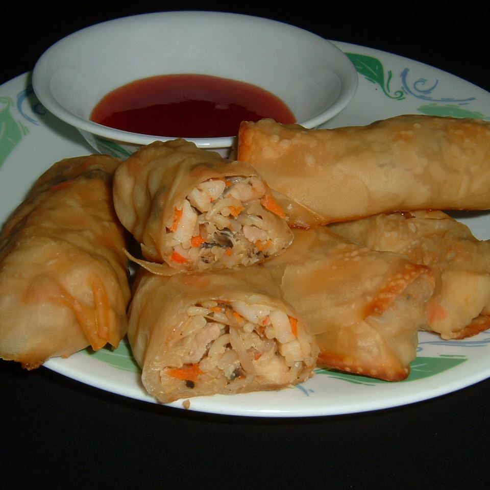

Spring Rolls

Description
These tasty spring rolls are packed with vegetables, seafood and pork. They contain a lot of ingredients but are worth the effort. Serve them with your favorite sauce. Some types of mushrooms may need to be soaked 2 to 3 hours before use. Ground turkey may be substituted for pork.
Ingredients
- 2 ounces dry soy vermicelli
- 4 eggs, beaten
- 1 onion, finely chopped
- 2 ounces mushrooms, drained and chopped
- ¾ (4 ounce) can small shrimp, drained and chopped
- 1 pound lean ground pork
- 2 tablespoons vegetable oil
- 1 carrot, shredded
- 2 ounces crabmeat
- 3 ounces bean sprouts
- 2 pinches ground black pepper
- 1 tablespoon soy sauce
- 3 tablespoons fish sauce
- 1 clove garlic, chopped
- 20 rice wrappers (6.5 inch diameter)
- 1 quart oil for deep frying
Steps
- Soak the vermicelli 30 minutes in warm water; drain.
- In a large bowl, mix the vermicelli,eggs, onion, mushrooms, shrimp, pork, vegetable, oil, carrot, carbmeat, bean sprouts, pepper, soy sauce, fish sauce and garlic.
- One by one, moisten the rice wrappers with a damp tea towel and fill with 2 to 3 tablespoons of the vermicelli mixture. Roll the wrappers, and allow them to set for 30 minutes.
- In a large saucepan, heat the oil to 375 degrees F (190 degrees C).
- Fry the spring rolls one or two at a time until golden brown, about 3 minutes. Drain on paper towels.